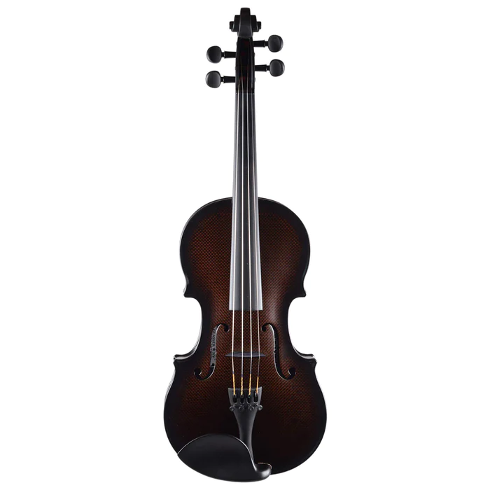
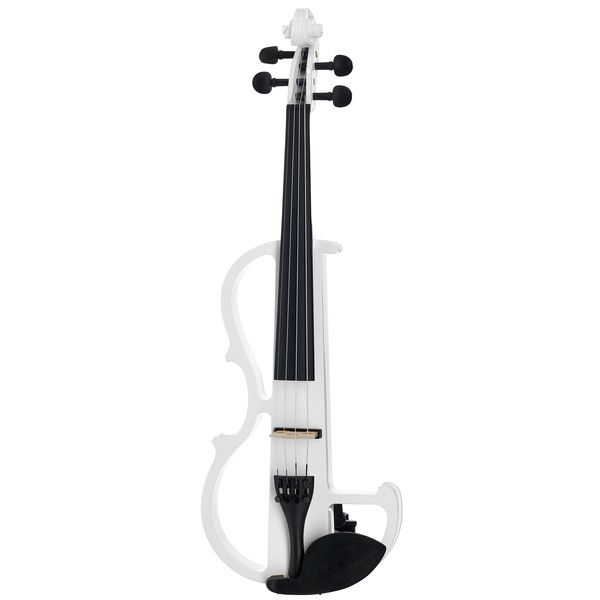
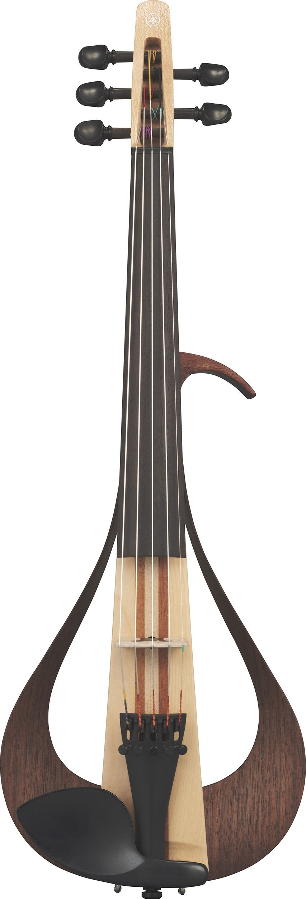
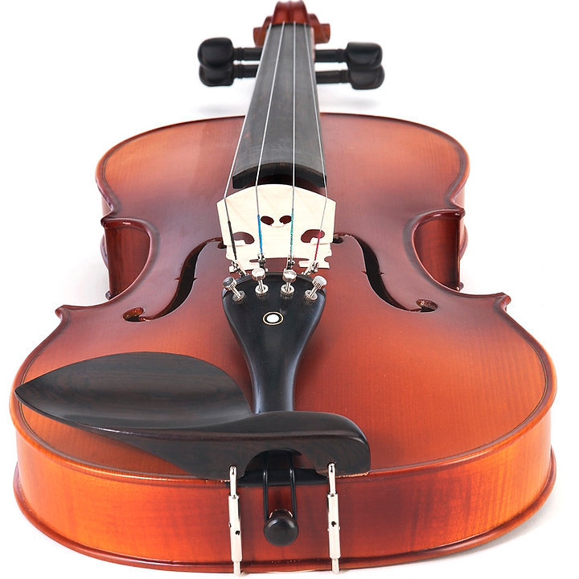
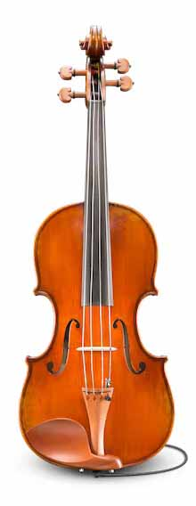
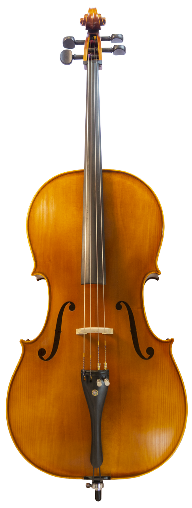
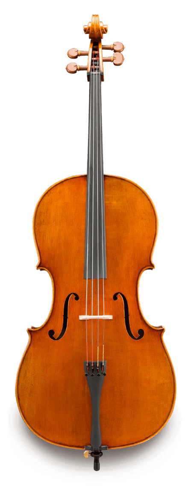
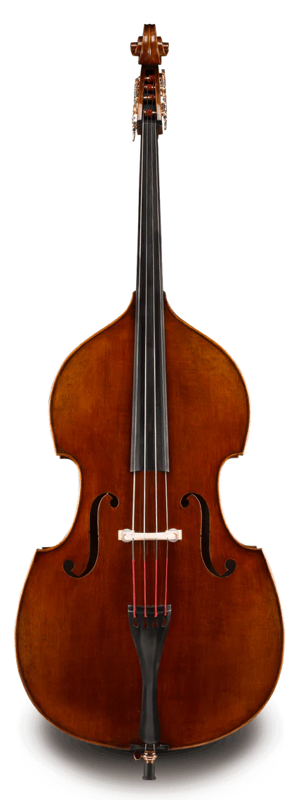

Kemanlar
Glasser Carbon Composite Violin (885$)

This Glasser carbon fiber violin features a revolutionary Carbon Composite body that is long-lasting, durable, lightweight, and has a tonal quality that is rich and clear. The carbon fiber violin offers a high-performance, modern alternative to traditional wood instruments.
The carbon fiber violin is an almost indestructible violin that is great for travel, outdoor performances, and all those places where your instrument might get wet, overheated, knocked, bumped, or scratched like lively sessions, bar gigs, dances, orchestra pits, and outdoor shows. The Glasser carbon fiber violin is also very low maintenance, easy to play, and of great value.
SCOTT CAO 1714 SOIL (1.305$)

The Soil is strikingly handsome and this 1714 Stradivari has had more experience on the concert platform than almost any other violin. Played by Itzhak Perlman, the Soil is widely considered to be the best sounding Stradivari ever created. Other owners of this iconic instrument are French luthier and collector Jean-Baptiste Vuillaume and Yehudi Menuhin. The beauty of the violin is found in its extravagant maple wood figure which is illuminated and partly covered by Stradivari's greatest varnish.
The GRGR120EX features poplar body with binding. A maple neck combined with a treated New Zealand pine fretboard, reversed headstock, sharktooth inlay and Jumbo frets allows aggressive power chording and smooth, fast playing. Electronics include two Infinity R pickups with a 3-way selector switch for a variety of tonal options, right at your fingertips.
Holstein German Virtuoso Violin (7.800$)

The story behind every Holstein German Virtuoso violin begins with quality selected tonewoods from the best regions of Bavaria, Austria, Switzerland, and Bosnia. We start with wood that is over 30 years old, and dried and seasoned for an additional 30 years. These violins are handcrafted with the greatest attention to detail in our German workshop, which has over 25 years of experience making fine instruments.
The Virtuoso violin is handmade by one master luthier from start to finish and raises the standard for affordable, handmade European instruments. While many shops are content to use German-sounding trade names for instruments not even made in Europe, the Holstein Virtuoso, named for our Founder and Fiddlerman himself, Pierre Holstein, represents an exciting new era of bringing the highest quality instruments from northern Bavaria to our global customer base.
The term "Virtuoso" refers to a person who is highly skilled as a musician or other artistic pursuits. They are often seen as possessing either an outstanding natural talent or advanced technical ability through years of hard work and dedication.
The Holstein German Virtuoso is an excellent choice for any style and ability. The tone of each instrument is unique and generally produces exceptional tonal characteristics from very deep and profound low registers and brilliant and clear upper register. With the power to fill an entire hall, and sensitive for even the most intimate of gatherings, the violin nimbly responds to the desires of the performer.
Elektro Kemanlar
Harley Benton HBV 870LH/WH (155$)

This is a very affordable electric violin, a good beginner violin kit, includes a case, composite bow, rosin, and 9V battery.The strings and the cable that come with it are cheap and are better replaced. The same can be said for the bow, which feels unbalanced and heavy. You’re better off with a carbon fiber one. However, these issues are all easily fixed. You do have to consider though that this will add to the overall price.
The only real thing I didn’t like was that it’s slightly on the heavy side. Not too much, but it can create issues with being able to play for extended periods.The sound is quite good for a budget electric violin, and overall this one is not a bad buy. It is also easily found all around the world.
Yamaha YEV-105 (1.305$)

A new kind of electric violin taking its design inspiration from the organic beauty of wood, the simplicity of clean lines, and the comfort of light weight, combined with innovative Yamaha sound to create this gorgeous live-performance instrument. (5-string model)
Inspired by craft and design elements of Yamaha acoustic guitars, Yamaha set out to design a new kind of electric violin made primarily from wooden materials. This instrument takes a design cue from both violin and acoustic guitar shapes, creating a beautiful yet amazingly lightweight instrument made with six different woods. These wood materials are carefully crafted with an airy infinity loop-like design, representing the dimensions of acoustic space, and is as stunning visually as it is fun to play. Using a unique Yamaha bridge pickup that carries over from professional Yamaha Silent Violins, this instrument delivers a smooth, organic and warm tone. The design incorporates a simple ¼” input to match the clean and natural aesthetic of this innovative electric violin.
Yamaha SV-200 (1.945$)

A solid-body electric violin for performance. The SV200 offers easy feedback-free amplification, effects, silent practice and more, with superb tone that approaches the quality of a high-quality acoustic violin. This is a perfect performance instrument for any venue.
Solid-body Violin;
- Dual piezo pickups and EQ dial provides a rich, warm tone
- New body design has very natural feel
- Professional studio-quality preamp
- Available in cardinal red, ocean blue, black, brown
Viyolalar
Cecilio CVA-500 Violas (299$)

For the beginner or intermediate student, the Cecilio CVA-500 is a recommended instrument because of its quality and price. Not only does it sound great but also you receive included features and accessories normally found in much more expensive brands.
For students, it’s outfitted with everything you need to start playing including a Cecilio chromatic tuner, a lightweight hard case, quality rosin cake, bridge and Brazilwood bow with authentic Mongolian horsehair.
D&Z Strad Viola - Model 400 (1.500$)

The Model 400 viola is a finely crafted handmade instrument by our award-winning luthiers of the Violin Society of America. This exquisite viola is made from naturally air-dried and aged tonewood and is lightly antiqued with hand-applied oil varnish for the look and feel of a vintage instrument. The result of this craftsmanship is a viola that is consistent with old-world traditional European practices in both look and sound. A wonderful instrument for advanced players and professionals.
The carbon fiber violin is an almost indestructible violin that is great for travel, outdoor performances, and all those places where your instrument might get wet, overheated, knocked, bumped, or scratched like lively sessions, bar gigs, dances, orchestra pits, and outdoor shows. The Glasser carbon fiber violin is also very low maintenance, easy to play, and of great value.
Andreas Eastman Series+ VA405+ (1.705$)

While plugged in, the Series+ 501 viola keeps the natural warmth of a traditional viola while adding edge and a whole new dimension of musical possibilities. The varnish we use on our model 405 instruments emulates the exceptional varnishes from a century ago where a small number of master workshops in Markneukirchen, Germany distinguished themselves by developing some of the best varnishes of the modern era. The unique pickup system is embedded into the spruce top of the instrument before varnishing with no disturbance to the bridge. Our proprietary 3.5 mm jack is used as the end button on the violins and viola’s making it unnoticeable. Each Series+ instrument comes with a lightweight, low-profile cable that provides a seamless connection to your amplifier or individual playing setup, making this the easiest and most comfortable design to “plug in” on the market.
Çello
Geneva Violoncello (4/8 - antique) (3.350$)

VIOLONCELLO SERIES MAESTRO – excellent musical instruments with a long tradition of production and proven manufacturing practices. They offer their users the highest standard of quality material and perfect sound. These instruments are designated for advanced students, semi-professionals and professionals.
Specially selected solid spruce top, strongly flamed solid maple back, sides and neck, ebony tailpiece with 4 adjusters, ebony trimmings with Parisian eye, French type bridge,Thomastik Spirocore strings, ebony endpin, spirit varnish, antique finish.
Eastman Master VC906 Cello (8.514$)

Andreas Eastman Master cellos are crafted by a master luthier from the most select, stunningly flamed maple back and a straight medium-grain spruce top. The gold colored oil varnish enhances the tonal quality giving lots of depth and edge. Each instrument is meticulously crafted for optimum sound production.
-
Finish: Oil Varnish
-
Fingerboard: Ebony
-
Top: Bosnian Spruce
-
Ribs: Maple
-
Back: Bosnian Maple
-
Purfling: Genuine Hand-inlaid
-
Bridge: Despiau 2 Tree
-
Fittings: Boxwood with Wittner Tailpiece
-
Available Patterns: Stradivari, Montagnana
-
Available Sizes: 4/4
-
Strings: Larsen A+D, Spirocore Tungsten G+C (installed)
Knilling 182F Nicolo Gabrieli Concert Model Cello (9.899$)

The Knilling 182F Nicolo Gabrieli Concert Cello represents the pinnacle of Knilling's craftsmanship, and their passion for building superior instruments is evident as soon as you open the case. The Nicolo Gabrieli series of instruments leverage premium European tonewoods, sourced from regions prized by luthiers ever since the days of Stradivari. Your reward is world-class tonal balance, response, and projection, creating an expressive instrument that will translate every nuance of your technique. Combining some of the finest tonewoods in the world with masterful craftsmanship and attention to detail, Sweetwater is sure the Knilling 182F Nicolo Gabrieli Concert Cello will exceed your expectations.
Knilling Nicolo Gabrieli Concert Cello Features:
-
Crafted from premium European spruce and maple, sourced from regions prized for their tonewoods since the days of Stradivari
-
Gorgeous European maple neck and scroll, with ebony fingerboard, nut saddle, and tuning pegs
-
Hand-applied spirit varnish finish
-
Equipped with D'Addario Kaplan Amo synthetic-core strings
-
Expertly set up and optimized in the Knilling String Shop
Kontrabaslar
Thomann 33AS 3/4 Europe Double Bass (1.835$)

Thomann 33AS 3/4 Europe Double Bass satin varnish, made in Europe, set up in Germany in Thomann`s string-workshop, comes with Artino Strings, fully carved 3/4 double bass with carved spruce top and flat carved maple back, round ebony fingerboard, Tirolean machines, adjustable endpin, scale length ca.105cm, made in Europe, comes with Bellacura polishing set (microfibre-cloth and 20ml Bellacura). Colour: slightly antiqued, satin varnish.
Solid 3/4 Double Bass
-
With solid spruce top and flat solid maple back
-
Round ebony fingerboard
-
Tyrolean machine heads
-
Height-adjustable endpin
-
Scale: approx. 105 cm
-
Colour: Slightly antique, matte lacquered
-
Made in Europe
-
Set up and made ready to play in Germany in the Thomann string specialist workshop
GEWA Rockabilly 3/4 - Half solid (2.650$)

The punchy slap sounds and driving walking lines are among the most important trademarks of this style of rock'n'roll. The double basses of the GEWA Rockabilly series are visually and tonally precisely tuned to fit into the typical 50s sound and look that fans of the typical American hairdos and pettycoats love so much. With the optional pickups, they are stage-ready at any time and, of course, every single bass is made ready to play in the GEWA master workshops before delivery so that you can start rocking right away.
High-quality instruments are and always have been our mission. But they must also be affordable and accessible to all. And of course the same goes for bags and cases that the instruments are entrusted to. GEWA German Engineered products are 100% conceptualised and designed by our experts in Germany. Know-how, experience and a constantly open ear for the needs of musicians characterise the work of the development teams. In cooperation with partner and GEWA-owned production facilities all over the world, ideas are turned into products. These locations enable us to use production techniques that are not available in this form elsewhere. Our specialists regularly visit all the production sites to train the staff and ensure that all aspects of production are in line with our expectations. This enables us to guarantee a reasonable price at a consistently high production quality. But that is not quite enough for us. That's why every single product is put through its paces again in our service workshops before delivery. Only in this way can we be sure that GEWA German Engineered is always the right choice.
In hardly any other popular music style is the double bass as present as in rockabilly.
-
Gamba shape
-
Laminated spruce top
-
Arched, laminated maple back
-
Tyrolean machine heads
-
Wider ebony fingerboard
-
Fingerboard markings / Dots as indication
-
Satin black finish
-
Nuremberger precision strings
-
Special strings upon request possible
-
Bridge height adjustable
Rudoulf Doetsch VB701 Double Bass (9.728$)

Rudoulf Doetsch Model 701 basses are crafted from aged European tonewoods and are adjusted for optimum tone and playability. Their trademark antique-style spirit varnish is then applied by hand. Rudoulf Doetsch Model 701 basses are in the hands of experts every step of the way, resulting in a superior instrument with a warm, balanced, and projecting tone.
Lifetime Eastman Strings Warranty
-
Finish: Antiqued Spirit Varnish
-
Fingerboard: Ebony
-
Top: Spruce
-
Ribs: Maple
-
Back: Maple
-
Purfling: Genuine Hand-inlaid
-
Bridge: Despiau 1 Tree
-
Tuning Machine: Rubner Brass Tuning Machines
-
Tailpiece: Ebony
-
Available Patterns: Gamba
-
Available Sizes: 3/4
-
Strings: D'Addario Kaplan